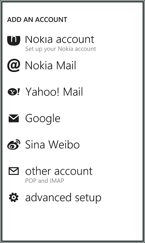
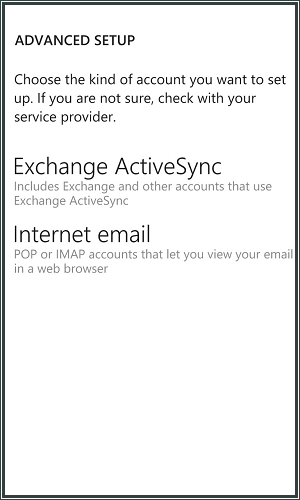

Windows Phone¶
Seleziona add an account.

Seleziona advanced setup
Inserisci il tuo indirizzo e-mail.
Inserisci la password che hai creato nel Pannello di controllo.
Seleziona Next.

Seleziona Internet email.
Inserisci il tuo nome come desideri che venga visualizzato nei messaggi e-mail che invierai.
Inserisci un nome per l’account e-mail.
Inserisci imap.ewake.it nel campo del server della posta in entrata.
Seleziona IMAP4 come tipo di account dal menu a discesa.
Inserisci l’indirizzo e-mail nel campo del nome utente e la password.

Inserisci smtp.ewake.it nel campo del server della posta in uscita (SMTP).
Assicurati che le caselle Outgoing server requires authentication e Use the same username and password for sending email siano selezionate.
Assicurati che la casella Require SSL sia selezionata per la posta in entrata e per la posta in uscita.

Seleziona la frequenza di invio/ricezione delle e-mail del telefono dal menu a discesa.
Seleziona sign in per completare.